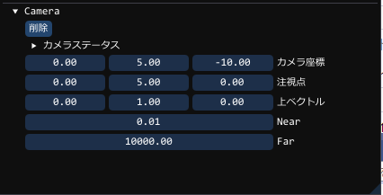
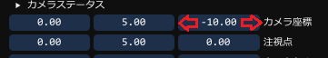
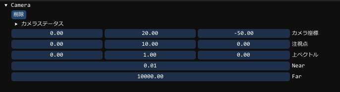
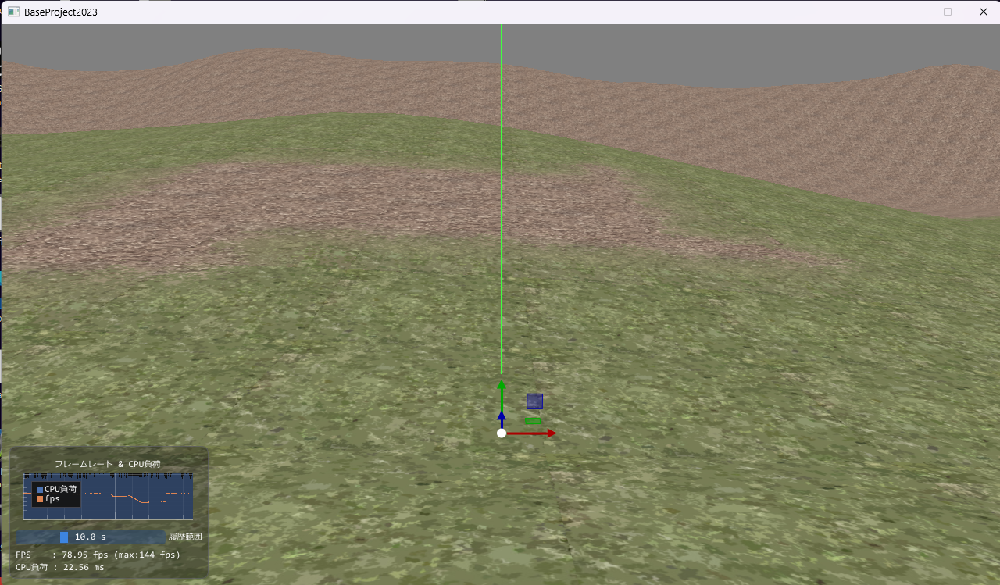

カメラの調整
この章は前章「GUIでプログラミング」で行った状態の続きとなります。前章で行った最後の画面は、地面の足元を見ている感じになっているので、
正面を眺めるようなカメラに調整してみましょう
カメラの設定には、
Cameraオブジェクトそのものを操作して調整する方法
ComponentCamera(▼Camera部分)を調整して設定する方法
の2通りがあります
今回はキャラに付随することや地面にもぐるなどは考慮せずに構築しますので
ComponentCameraを調整する方法で行います
オブジェクトには、「Camera」と「Ground」が存在しますが、
GUIで、Cameraを選択してください
※注意 画面の地面をクリックしてしまうと「Ground」が選択されてしまいます
カメラの設定を以下のようにしてみましょう。

前を向いたような画面になったと思います。項目は以下のようなものが存在しており、次の意味となります。
| カメラ座標 | カメラの位置です。3D空間内の位置となります。 |
|---|---|
| 注視点 | 見ている位置です。こちらも3D空間内の位置となります。 |
| 上ベクトル | カメラの上方向です【基本的に(0,1,0)から変更する必要はありません】 |
| Near | カメラのどれくらい近くから映るようにするか(0にしてはいけません) |
| Far | どこまで離れているところまで映るようにするか |
すると項目の数値をリアルタイムに増減させることができます。

以降で使用する最終的なカメラの設定
この章以降の内容としては、カメラは以下の設定で進めます。

以下のような画面になっていれば成功です
